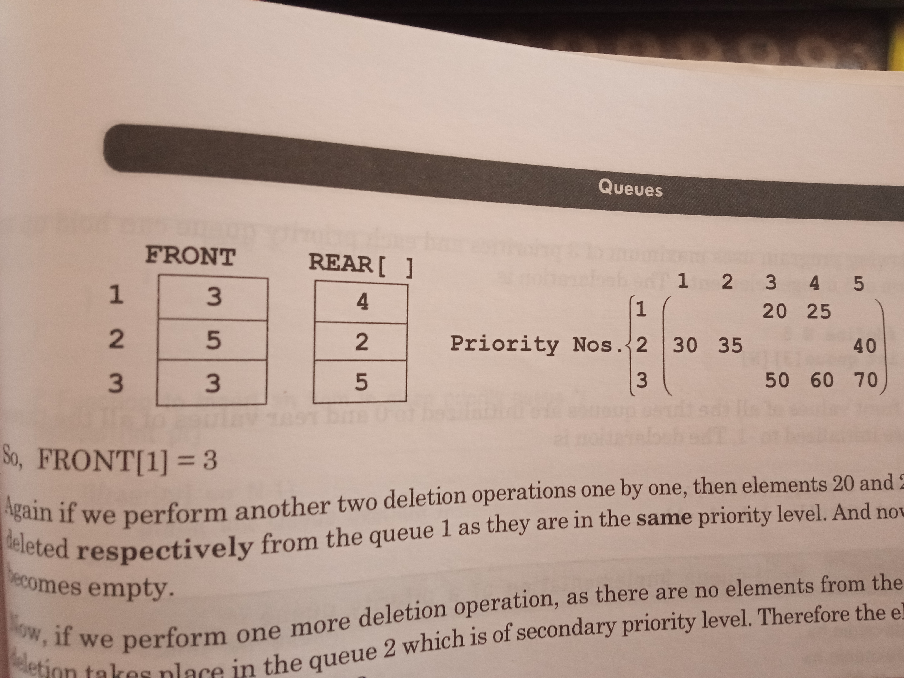

Priority Queue
A typical example of a priority queue in the computers is CPU, where the CPU process the porcesses which are
of higher importance/priority
The order in which the elements are processed (deletion and insertion) comes from the following rules:
- An element of higher priority is processed before any element of lower priority.
- If 2 elements have same priority, then the element which comes first will be processed first.
Types
- Ascending priority queue
- Collection of elements , where elements can be inserted arbitrarily but deletion can only happens for the
smallest element.
- Descending priority queue
- deletion is only for the largest element.
types of implementation
- arrays
- structs
- multiple-queues
code for priority queue using simple linear arrays:
#include<stdio.h>
#define MAX 5
int q[MAX],front=0,rear=-1;
// ascending queue
// for descending queue - just change the logic to find the largest element
// performing array implementation for the priority queue
void qdisplay(){
printf("\nUpdated list: ");
for(int i=front;i<=rear;i++){
printf("%d ",q[i]);
}
}
void qinsert()
{
char ch;
do{
if(rear==MAX-1){
printf("\nOverflow condition! ");
return;
}
int item;
printf("\nEnter the element to be inserted: ");
scanf("%d",&item);
q[++rear]=item;
printf("\nElement was successfully inserted! ");
printf("\nDo you want to insert more?[y/n]");
scanf(" %c",&ch);
}while(ch=='y');
qdisplay();
}
void qdelete(){
char ch;
do{
if(rear==front-1){
printf("\nUnderflow condition! ");
return;
}else if(rear==front){
printf("\nThis is the last element in the queue");
printf("\nThe element deleted is: %d",q[front]);
front=0;
rear=-1;
}else {
int min=q[0],index=0;
for(int i=0;i<rear;i++){
if(min>q[i+1]){
min=q[i+1];
index=i+1;
}
}
printf("\nThe element deleted is: %d",q[index]);
for(int i=index;i<rear;i++){
q[i]=q[i+1];
}
rear--;
}
printf("\nElement deleted! ");
printf("\n Do you want to delete more?[y/n]");
scanf(" %c",&ch);
}while(ch=='y');
qdisplay();
}
void process_del(){
qinsert();
qdelete();
qdisplay();
}
// here on this if for processing the insertion of the elements so that deletion can happen only at he front
void delete(){
char ch;
do{
if(rear==front-1){
printf("\nUnderflow condition!");
return;
}
printf("\nElement deleted is: %d",q[front]);
front++;
printf("\nDo you want to delete another element?[y/n]");
scanf(" %c",&ch);
}while(ch=='y');
qdisplay();
}
void insert(){
char ch;
do{
int temp=rear;
if(rear==MAX-1){
printf("\nOverflow condition!");
return;
}
int item;
printf("\nEnter the item: ");
scanf("%d",&item);
while((temp>=0)&&(item<q[temp])){
q[temp+1]=q[temp];
temp--;
}
q[temp+1]=item;
rear++;
qdisplay();
printf("\nElement inserted!\nDo you want to insert more?[y/n]");
scanf(" %c",&ch);
}while(ch=='y');
}
void process_ins(){
insert();
delete();
qdisplay();
}
int main(){
printf("\n****Using Simple Linear Array****");
printf("\nSorting while deletion: ");
process_del();
printf("\nSorting while insertion: ");
process_ins();
}
Priority Queue using Multiple Queues
We can use 2d arrays.
Where row number acts as the priority values.
The front and rear of each priority is maintained by arrays.
Therefore the length of the arrays named front and rear are equal to the 1st dimension of
the array named queue.

Code for PQ w Multiple Q
#include<stdio.h>
#include<stdlib.h>
#define N 5
int queue[3][N];
int front[3]={0,0,0};
int rear[3]={-1,-1,-1};
int item,pr;
void display(){
printf("\nDisplaying!!\n");
int i,j;
for(i=0;i<3;i++){
if(rear[i]==front[i]-1){
printf("\nNo elements in Queue %d",i+1);
}
else{
printf("\nQueue %d",i+1);
for(j=front[i];j<=rear[i];j++){
printf("\n\t%d",queue[i][j]);
}
printf("\nFront of the queue is %d",queue[i][front[i]]);
printf("\nRear of the queue os %d",queue[i][rear[i]]);
}
}
return;
}
void insert(int pr){
printf("\nInserting!!\n");
if(rear[pr]==N-1){
printf("\nQueue Overflow");
return;
}
else{
printf("\nEnter the item: ");
scanf("%d",&item);
rear[pr]++;
queue[pr][rear[pr]]=item;
display();
return;
}
}
void delete(){
printf("\nDeleting!!\n");
int i;
for(i=0;i<3;i++){
if(rear[i]==front[i]-1){
printf("\nQueue %d has a underflow condition! ",i+1);
}
else{
printf("\nFrom queue %d \n Delete item %d",i+1,queue[i][front[i]]);
front[i]++;
display();
return;
}
}
}
void main(){
int ch;
while(1){
printf("\n\t Priority Queue Implementation using Multi-Queue! [2dArrays] ");
printf("\n*****************************************************************\n");
printf("\n1.Insert\t2.Delete\t3.Display\t4.Exit\nEnter your choice: ");
scanf("%d",&ch);
switch(ch){
case 1:printf("Enter the priority number: ");
scanf("%d",&pr);
if(pr>0&&pr<4)
insert(pr-1);
else
printf("Only 3 Priority exists - 1,2,3");
break;
case 2:delete();
break;
case 3:display();
break;
case 4:exit(0);
}
}
}
Double-Ended Queue
Deque - pronounced as deck
This is useful for insert or deletion from two ends.
- Input restricted Deque
-
- Data is taken as input only from the rear end
Deletion can be from both front and rear
- Output restricted Deque
-
- Data is deleted only from the front.
Insertion can happend from both front and read
This is the only kind of queue that is allows decrementing the front and rear pointers.
Code
#include<stdio.h>
#include<stdlib.h>
#define N 5
int queue[N],front=-1,rear=-1,choice,item;
void insert_front(){
printf("\nInserting at front");
int item;
if(front==(rear+1)%N){
printf("\nQueue overflow");
return;
}
printf("\nEnter the data: ");
scanf("%d",&item);
if(front==-1){
front=rear=0;
}
else if(front==0){
front=N-1;
}
else{
front=(front-1+N)%N;
}
queue[front]=item;
return;
}
void insert_rear(){
printf("\nInserting at rear");
int item;
if(front==(rear+1)%N){
printf("\nQueue overflow");
return;
}
printf("\nEnter the data: ");
scanf("%d",&item);
if(front==-1)
front=rear=0;
else
rear=(rear+1)%N;
queue[rear]=item;
}
void delete_front(){
if(front==-1){
printf("\nQueue Underflow!");
return;
}
item=queue[front];
printf("\nThe deleted item is: %d",queue[front]);
queue[front]=0;
if(front==rear)
front=rear=-1;
else
front=(front+1)%N;
return;
}
void delete_rear(){
if(front==-1){
printf("\nQueue Underflow");
return;
}
item=queue[rear];
printf("\nDeleted element is: %d",queue[rear]);
queue[rear]=0;
if(front==rear)
front=rear=-1;
if(rear==0)
rear=N-1;
else
rear=(rear-1)%N;
return;
}
void display(){
int i;
if(front==-1){
printf("\nQueue is empty!");
return;
}
if(front<=rear){
for(i=front;i<=rear;i++){
printf("\t%d",queue[i]);
}
}
if(front>rear){
for(i=front;i<N;i++){
printf("\t%d",queue[i]);
}
for(i=0;i<=rear;i++){
printf("\n%d",queue[i]);
}
}
printf("\n\tFront of the queue is %d",queue[front]);
printf("\n\tRear of the queue is %d",queue[rear]);
return;
}
void input_res(){
int ch;
while(1){
printf("\n\tUsing Input Restricted Deque");
printf("\n\t******************************");
printf("\n\t1.Insert\t2.Delete from Front\t3.Delete from Rear\t4.Display\t5.Exit\nEnter your choice: ");
scanf("%d",&ch);
switch(ch){
case 1:insert_rear();
break;
case 2:delete_front();
break;
case 3:delete_rear();
break;
case 4:display();
break;
default:exit(0);
}
}
return;
}
void output_res(){
int ch;
while(1){
printf("\n\tUsing Output Restricted Deque");
printf("\n\t*******************************");
printf("\n\t1.Insert from front\t2.Insert from rear\t3.Delete\t4.Display\tExit\nEnter your choice: ");
scanf("%d",&ch);
switch(ch){
case 1:insert_front();
break;
case 2:insert_rear();
break;
case 3:delete_front();
break;
case 4:display();
break;
default:exit(0);
}
}
return;
}
void main(){
int ch;
while(1){
printf("\n\tImplementing Deque using Array\n");
printf("\n*****************************************************************\n");
printf("\n1.Input restricted Deque \t2.Output restricted Deque \nEnter your choice: ");
scanf("%d",&ch);
switch(ch){
case 1:input_res();
break;
case 2:output_res();
break;
case 3:
default:exit(0);
}
return;
}
}
Applications
- Time-Sharing Operating Systems
- Information read and write from the disk to a console
- Circular queue are used in
Real-Time OS
- Network-communications
Chap10